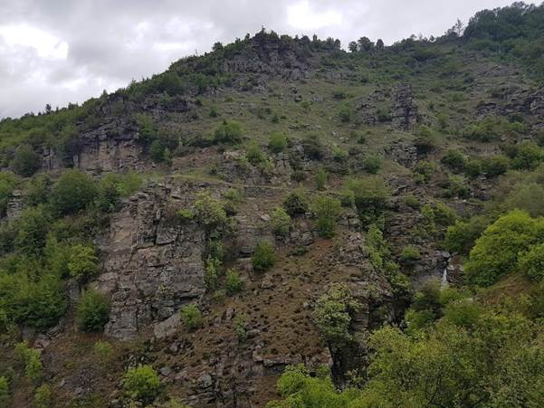
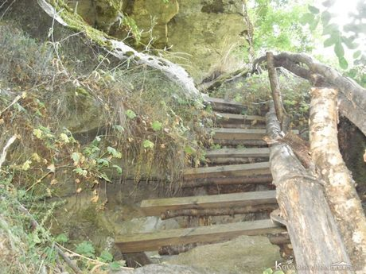
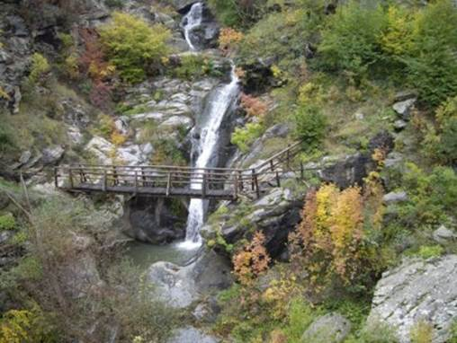

| Пещера “Ризова дупка”- карстова пропаст с дълбочина 10-12 метра. В пещерата са
изградени отвесни дървени стълби от двата отвора, съответно за спускане и изкачване, по които се стига до своеобразен коридор с
дължина 15 метра и ширина 2 метра. |
 |
|  |  |